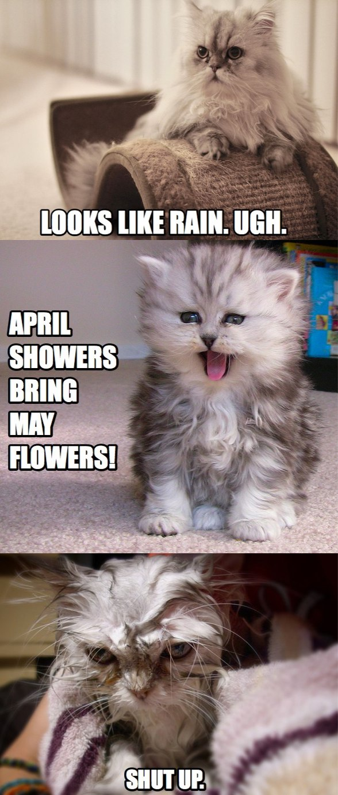
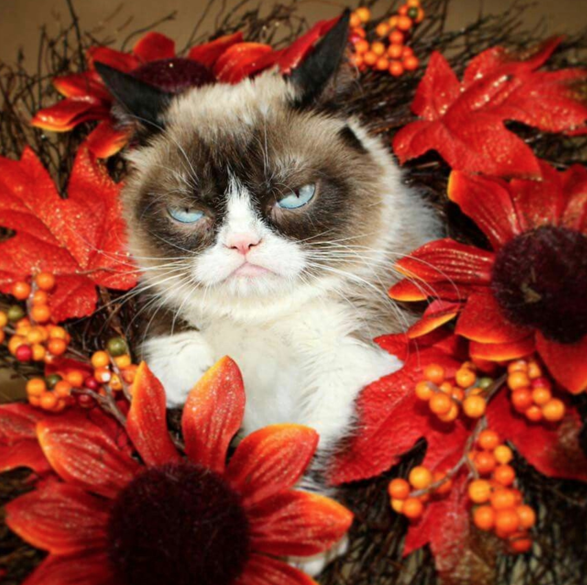

<!DOCTYPE html>
<html>
<head>
    <title>Practica estacions</title>
    <meta name="author" content="uptivya">
    <meta charset="utf-8">
    <style>
        *{
            font-family: 'Alata', 'Helvetica', sans-serif;
            background-color: salmon;
        }
        input{
            outline: none;
        }
        #container{
            display: flex;
            margin: 200px auto;
            width:fit-content;
        }
        #container_text{
            background-color: salmon;
            box-sizing: border-box;
            color:white;
            width:500px;
            transition: .2s ease;
            display:flex;
            position:relative;
            box-shadow: 10px 10px 10px rgb(187, 95, 84) inset, -7px -7px 13px rgb(255, 158, 147) inset;
        }
        #resultat_container{
            text-align: center;
            min-height:400px;
            width: 300px;
            margin-left: 30px;
            background-color: white;
            padding:10px;
            letter-spacing: 1.2px;
            font-family: 'Alata', 'Helvetica', sans-serif;
        }
        #resultat{
            min-height: 400px;
            padding:10px;
            border: 5px solid salmon;
            box-sizing: border-box;
            color:white;
            text-align: left;
            font-weight: 700;
        }
        #boto_comprovar{
            color:white;
            width: 80%;
            height: 100px;
            padding: 10px 0px;
            border:none ;
            border-bottom:10px solid white;
            border-right:10px solid white;
            margin: 30% auto 0;

            background-color: salmon;
            /*box-shadow: 5px 5px 5px rgb(187, 95, 84), -3px -3px 7px rgb(255, 170, 161);*/
            transition: 3s ease;
            font-size: 35px;
            font-weight: 900;
            display: block;
        }
        #boto_comprovar:hover{
            cursor:pointer;
            /*box-shadow: 5px 5px 5px rgb(187, 95, 84) inset, -3px -3px 7px rgb(255, 170, 161) inset;*/
            
        }
        p{
            margin-bottom: 0;
        }

    </style>
</head>
<body>
    <div id="container">
        <div id="container_text">
            <input type="button" id="boto_comprovar" value="Comprova l'estació" onClick="comprovarEstacio()">
        </div>
        <div id="resultat_container">
            <div id="resultat">

            </div>

        </div>
    </div>


    <script>
        var data = 0;
        var mes = 0;
        var dia= 0;
        var hora = 0;
        var resultat = 0;

        function comprovarEstacio(){
            data = new Date();
            mes = data.getMonth();
            dia = data.getDate();
            hora = data.getHours();
            resultat = document.getElementById("resultat");
            if((mes == 11 && (((dia >= 21) && (hora >= 4)) || dia > 21)) || (mes == 0) || (mes == 1) || (mes == 2 && (((dia<= 21) && (hora <4)) || dia < 21))){
                resultat.innerHTML="<p>És hivern i no se t'acudeixi fer res que no sigui xocolata calenta, manta i Netflix.</p>";
            }else if((mes == 2 && (((dia >= 21) && (hora >= 4)) || dia > 21)) || (mes == 3) || (mes == 4) || (mes == 5 && (((dia<= 21) && (hora <4)) || dia < 21))){
                resultat.innerHTML="<p>La primavera la sang altera i l'alèrgia accelera.</p>";
            }else if((mes == 5 && (((dia >= 21) && (hora >= 4)) || dia > 21)) || (mes == 6) || (mes == 7) || (mes == 8 && (((dia<= 21) && (hora <4)) || dia < 21))){
                resultat.innerHTML="<p>Tots volem fer vacances però fot tanta calor que al final acabes 24h davant el ventilador.</p>";
            }else if((mes == 8 && (((dia >= 21) && (hora >= 4)) || dia > 21)) || (mes == 9) || (mes == 10) || (mes == 11 && (((dia<= 21) && (hora <4)) || dia < 21))){
                resultat.innerHTML="<p>Plou i cauen les fulles però els colors i les temperatures i tot és tan bonic que, oh! Primavera o tardor sempre.</p>";
            }
            
        }
    </script>
</body>
</html>